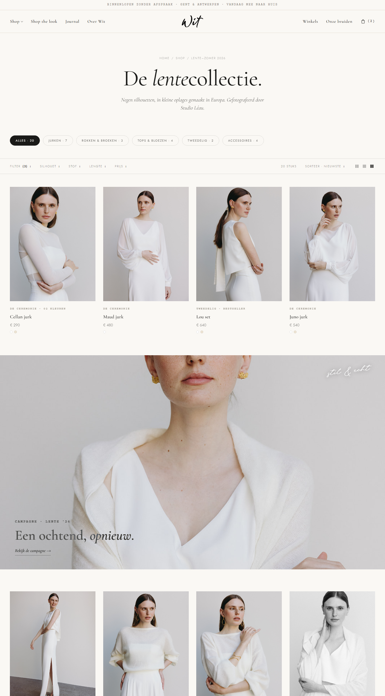
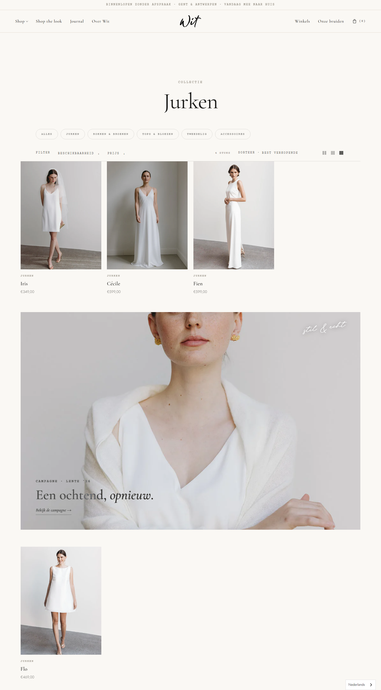

Visueel: wat wijkt af van het ontwerp.
Beide naast elkaar gerenderd op exact dezelfde breedte, zodat content-verschillen (echte vs demo-producten) wegvallen en enkel echte visuele/layout-afwijkingen overblijven. Klik een beeld om te vergroten.
Collectie op breed scherm
2560 px · /collections/jurken vs /shopAfwijkingOpgelost v1.2Dé visuele afwijking. In het ontwerp loopt het productgrid full-bleed — 4 grote producten van rand tot rand. In Shopify v1.1 wordt de hele collectie (chips, filters, grid, campagne) in een gecentreerde kolom van ~1400 px geperst, met ~580 px lege ruimte aan élke kant. Op jouw 4K-scherm oogt dat smal en leeg. Oorzaak: een gedeelde max-width:1400px-wrapper. Opgelost in v1.2 (full-bleed + 5/6 kolommen op brede schermen).


Collectie — campagne strandt een product
1440 pxAfwijkingOpgelost v1.2+ grid-ruimteHet ontwerp toont nette rijen van 4 producten. In Shopify wordt het campagnebeeld ná product 3 ingevoegd, waardoor op een kleine collectie (Jurken: 4 stuks) de eerste rij 3 producten + een leeg vakje heeft en het 4de product (Flo) alleen onder de campagne belandt → oogt onaf. Opgelost in v1.2 (editoriale blokken niet meer standaard).
Klein verschil (bron-geverifieerd, nog niet aangepast): de verticale tussenruimte tussen productrijen is in het thema krapper dan in het ontwerp (row-gap ~20–32 px vs ~40–64 px).


Hero (homepage)
1440 × 900 pxKomt overeenFull-bleed beeld, kop "Iets om in te blijven leven." linksonder, lead + teller rechtsonder, knoppen — identiek. (Enkel een minieme uitsnede van het demobeeld verschilt.) Geen visueel probleem.


Productpagina
1440 px · /products/iris vs /productKomt overeenGalerij-layout (2 kolommen + één breed beeld), sticky info-kolom, maten, "In de tas", accordeons, "Maak de look af" — structureel gelijk. De zichtbare verschillen zijn content, geen design: het demoproduct had kleurstalen (Ivoor/Optisch wit/Champagne), het echte "Iris" heeft enkel maten, en daardoor ontbreekt ook de ondertitel/stof (metafields, zie het andere rapport).


"Ziet er anders uit", maar is géén design-bug
Voor de duidelijkheid — deze dingen ogen anders dan het ontwerp, maar het is ontbrekende content/configuratie, niet de styling van het thema (en ze staan al in het andere rapport):
- Kale collectiekop (titel "Jurken" zónder de ondertitel "Negen silhouetten…") — omdat de collectie geen beschrijving heeft.
- Chips zonder telling / zonder actieve markering — chips nog niet aan collecties gekoppeld.
- Filters "Beschikbaarheid · Prijs" i.p.v. "Silhouet · Stof · Lengte" — Search & Discovery niet ingesteld.
- Demo-producten/-artikels en placeholder-beelden op de homepage — niets gekoppeld.